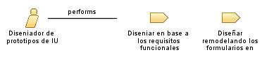

| Role: Diseniador de prototipos de IU |
| |
 |
| El Diseñador de Prototipos de IU en el proceso de la frutería crea representaciones visuales interactivas de la interfaz de usuario del sistema |
| Synonyms: Diseñador de Prototipos de Interfaz de Usuario, Especialista en Prototipado, Diseñador de Experiencia de Usuario |
|
Relationships
 |
| Primary Performs |
|
| Modifies |
|
Main Description
| El Diseñador de Prototipos de IU en el proceso de la frutería utiliza herramientas de diseño y prototipado para crear
modelos interactivos de la interfaz de usuario del sistema. Trabaja en estrecha colaboración con el equipo de diseño y los
analistas de negocio para comprender los requisitos y las necesidades del usuario. Además, realiza pruebas de usabilidad
con los prototipos para identificar y corregir posibles problemas de diseño antes de la implementación final. El Diseñador
de Prototipos de IU también puede colaborar con el equipo de desarrollo para asegurar la viabilidad técnica de los diseños
propuestos. |
Staffing
| Skills | Dominio de herramientas de diseño y prototipado, comprensión de principios de diseño de interfaz de usuario y experiencia
del usuario, habilidades de comunicación y colaboración, capacidad para iterar rápidamente en el diseño basado en la
retroalimentación recibida |
| Assignment Approaches | Crear prototipos funcionales de la interfaz de usuario del sistema, colaborar con el equipo de diseño para garantizar la
coherencia visual y la usabilidad de los prototipos, realizar pruebas de usabilidad y obtener retroalimentación de los
usuarios, iterar en el diseño basado en la retroalimentación recibida, documentar y comunicar los diseños propuestos al
equipo de desarrollo |
| Synonyms | Diseñador de Prototipos de Interfaz de Usuario, Especialista en Prototipado, Diseñador de Experiencia de Usuario |
Key Considerations
| Diseñador de Prototipos de IU, prototipado, usabilidad, retroalimentación, diseño interactivo |
|